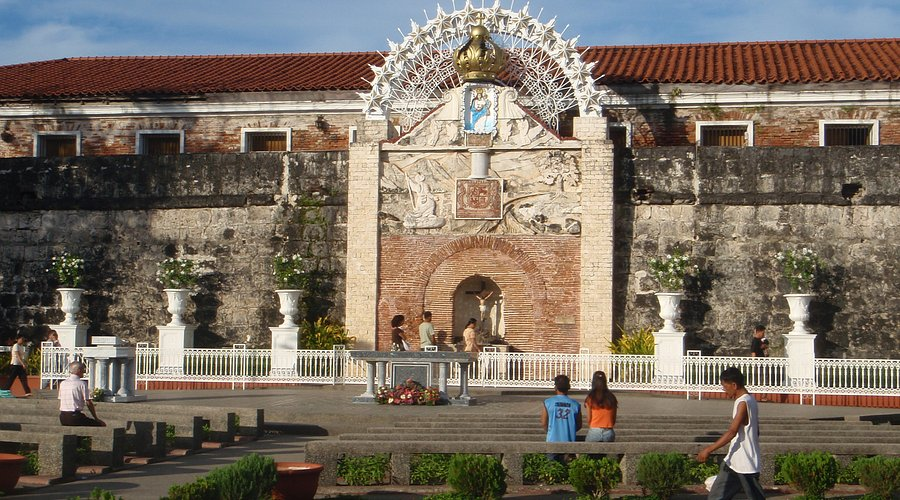
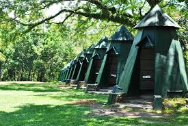
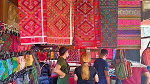
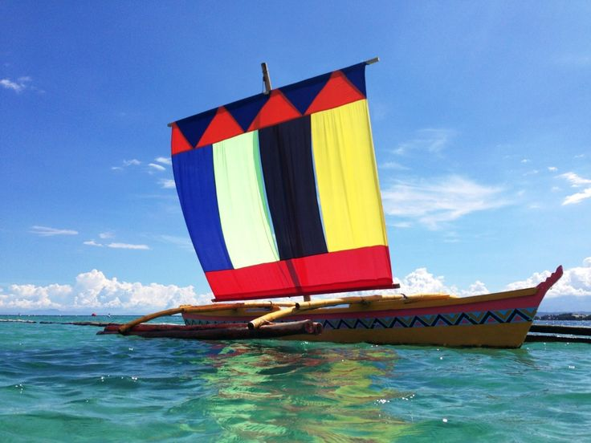

Bienvenidos a Zamboanga!
Where colorful vintas sail the vibrant sea, and centuries of Chavacano heritage meet tropical paradise.
Discover ZamboangaAbout Zamboanga City
Known as the "City of Flowers," Zamboanga is a highly urbanized city famous for its Chavacano language — the only Spanish-based creole in Asia. It is a fusion of Hispanic, Malay, and indigenous Subanon cultures.
• Curacha: The famous "spanner crab" with Alavar sauce.
• Knickerbocker: The iconic local fruit parfait dessert.
• Satti: Spicy grilled meat breakfast favorite.
Top Attractions

Fort Pilar Shrine
A 17th-century Spanish military fortress turned Marian shrine. A historic landmark and a symbol of deep faith.
Great Santa Cruz Island
World-famous for its rare pink sand beach, colored by crushed red organ pipe corals.

Pasonanca Park
Known for its tree house and natural swimming pools, offering a cool escape from the city.

Yakan Weaving Village
Observe the incredible skill of Yakan weavers creating intricate geometric patterns.
Festivals & Heritage
The city comes alive with the rhythm of the Zamboanga Hermosa Festival and the sight of the Regatta de Zamboanga.
Zamboanga Hermosa Song
"Zamboanga Hermosa, preciosa joyita / De hermosas mujeres que no tienen par..."
The city's anthem celebrates the beauty of its people and its Spanish roots.
Regatta de Zamboanga
The spectacular race of colorful Vintas during the October fiesta, showcasing the city's maritime history.
Vibrant Gallery
